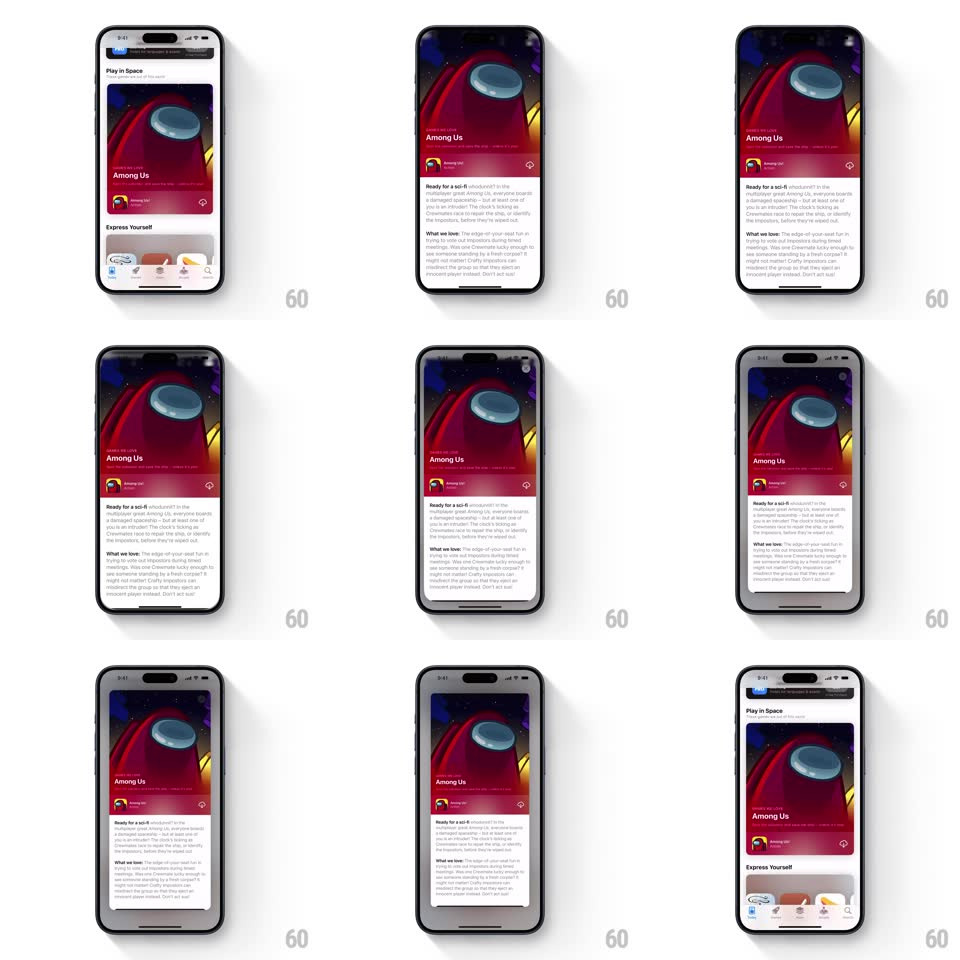

Media
Frame-by-frame

Rebuild this interaction 1:1: Apple App Store's featured card expansion - tapping a Today card morphs it fluidly into a full-screen detail (hero art, headline, body copy) while the feed recedes, and dragging down collapses it back into its exact card slot.

Rebuild this interaction 1:1: Apple App Store's featured card expansion - tapping a Today card morphs it fluidly into a full-screen detail (hero art, headline, body copy) while the feed recedes, and dragging down collapses it back into its exact card slot.
## Integration
Integration: stack-agnostic spec - springs given as stiffness/damping, timed motions as duration + curve; map every value to your framework and animation library of choice.
## Scene
Today feed: cards with big art ("Among Us" red crewmate art, headline "Play in Space"). Expanded: the card's art becomes a full-bleed hero, headline and app row pinned over its bottom, body article text scrolling beneath, a close X top-right.
## Motion spec
Pattern: shared-element card-to-page morph.
- Tap: the card's bounds expand to full screen (spring ~320/26 - critically damped feel, no bounce), corner radius animating 16 -> 0, the art scaling to fill (aspect-fill throughout, no distortion).
- Feed behind: scales down to 0.94 and dims 40% (300ms), status bar crossfading to the detail's.
- Headline and app row ride the card's bottom edge during expansion, then body content fades in below (250ms, 100ms after settle); the X fades in last.
- Scroll: the hero parallaxes (moves at 0.6x scroll) and the card's rounded top corners return on overscroll.
- Dismiss (X or pull-down): pull tracks 1:1, the card shrinking toward its feed slot with radius re-rounding; release past 120px commits, the card flying home (spring ~340/24) as the feed scales back up; short pulls snap back to full screen.
## Calibration
- The art NEVER reloads or flashes - one texture from feed to hero and back.
- Body text is scrollable only after expansion settles; during morph everything is one rigid card.
## Reduced motion
Simple crossfade to detail; no pull-to-dismiss tracking.
## Don't miss
- The collapse lands in the card's EXACT feed position, even if the feed scrolled - track the slot live.
- The feed's scale-down is what sells depth; without it the morph is just a push.